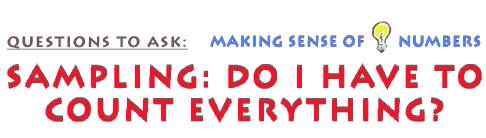

This is an archived copy of History Matters, provided by the Roy Rosenzweig Center for History and New Media. To explore this content in a new interface, visit Who Built America?.

|
|
 Another
problem historians often encounter has to do with sampling. Statisticians
have developed elaborate ways to measure the reliability of samples,
and to establish the likelihood that a particular sample appropriately
embodies the qualities of the larger population from which it was selected.
For a host of reasons, the kind of sample statisticians prefer to work
with is a random sample, and this kind of sample can be hard for historians
to draw. We often have only the partial remains of a larger body of
data to work with—say one month’s payroll of a business, two
plantations’ records of slave births over a given decade, or one
neighborhood’s building survey before a major fire. Statisticians
call this kind of sample a "sample of convenience," but samples
of convenience are frequently samples of necessity for historians. Again,
we cannot go back and take a new sample of the entire body of data if
the surviving records are incomplete. Gallup, of course, was right. How had the Literary Digest blundered so disastrously? The problem lay in both their response rate and their original sample. Those angry at Roosevelt were much more motivated to send back the Digest ballots. In addition, the ten million person "sample" was drawn from owners of automobiles and people listed in phone books—groups who were more affluent and thus less likely to vote for Roosevelt. Gallup employed a more sophisticated method of random sampling than Literary Digest, using areas drawn from existing election precincts and selecting a systematic sample of households. Within precincts, Gallup randomly chose a starting point then selected each nth household from which to interview one adult. He made sure to interview an equal number of men and women, to correct for variability in household size, and to ask respondents about how likely they were to vote in the upcoming election, so that he could project and account for voter turnout in his final polling results.
|
|||

|
||||